Choose the project model and place the initiail drawing views
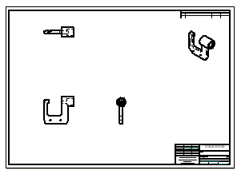
In the next few steps, choose the 3D part model and place the initial drawing views on the drawing sheet using the Drawing View Wizard.
Also learn how to move drawing views on the drawing sheet.
Choose Home tab→Drawing Views group→View Wizard command
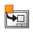
.In the Select Model dialog box, do the following:
-
Set the Look in location to the Solid Edge 2023 Training folder.
Note:The default location of the Training folder is C:\Program Files\Siemens\Solid Edge 2023\Training. However, the system administrator may have chosen a different location.
-
Set the Files of type option to Part document (*.par).
-
Select the file named Frame5.par.
-
Click Open.
The View Wizard command bar is displayed.
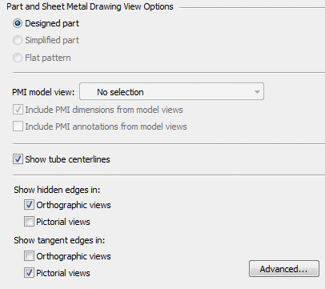
On the View Wizard command bar, click Drawing View Wizard Options .
Ensure that the part view options on the Drawing View Wizard match the illustration above.
Click OK to continue.
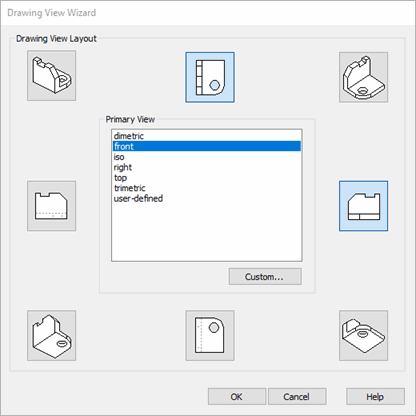
On the View Wizard command bar, click Drawing View Layout
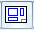
.Use the Drawing View Layout page to specify the primary drawing view and additional drawing views. The primary view is shown in the center.
All drawing views do not have to be specified in this step. Add them later using commands on the Home tab→Drawing Views group.
On the Drawing View Layout page, set the Primary View to front.
Select the top and right side views, as shown above.
Click OK to close the Drawing View Wizard.
Do not click the drawing sheet yet.
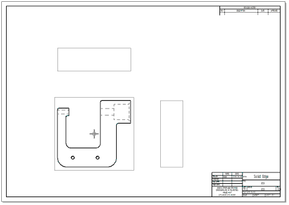
Observe the View Wizard command bar, which may display horizontally at the top of the application window or vertically along one side, depending on the user interface theme selected. Notice that the cursor display has changed in the graphics window.
The command bar contains options for controlling the drawing view scale, view display properties, and view orientation.
A ghosted image of the drawing views defined in the wizard are attached to the cursor, ready to position them on the drawing sheet. Do not click to place the views yet.
On the View Wizard command bar, set the Scale option to 1:1.
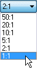
Position the cursor approximately as shown above, then click to place the drawing views.
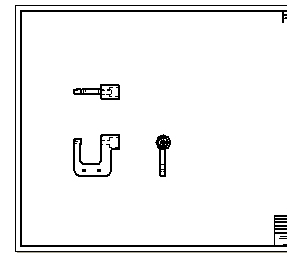
The drawing views should display similar to the illustration.
Place another drawing view using the Principal View command. Use this command to fold out new drawing views from an existing drawing view.
Choose Home tab→Drawing Views group→Principal View .
Position the cursor over the drawing view shown in the illustration below, then click to select it.
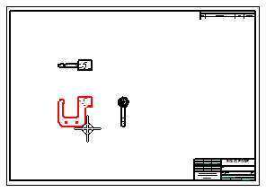
Move the cursor around the selected view and notice the changes as you move the cursor into different positions. The size change indicates a different view orientation.
Position the cursor as shown below, then click to place an isometric drawing view.
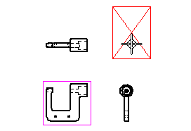
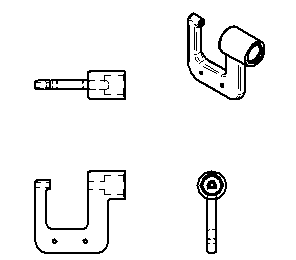
Observe the new isometric drawing view.
This drawing view could have been placed with the other views using the Drawing View Wizard.
Adjust the position of a drawing view by dragging it to a new position.
Press Esc to start the Select command  .
.
Position the cursor over the isometric drawing view, as shown below:
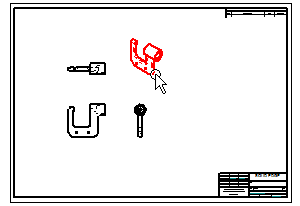
When the view highlights, click+drag the cursor to reposition the drawing view to the top right corner of the drawing sheet, as shown below.
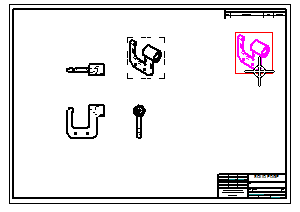
When moving an orthographic drawing view, such as a top, front, or right view, other drawing views may move to maintain proper drawing view alignment. Drawing view alignment lines also display to indicate to which views it is aligned.
-
Position the cursor over each of the three orthographic drawing views, and then drag them to new positions to observe how they remain orthographically aligned.
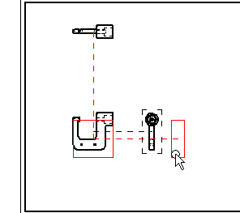
When moving an orthographic drawing view, orthographic alignment is maintained. If dimensions and annotations were placed on the drawing, these also move.
This makes it easy to adjust the position of the views on the sheet.
The display should now approximately match the illustration.
-
On the Quick Access toolbar, choose Save .
Placing of principal views of the part on the drawing sheet is finished.